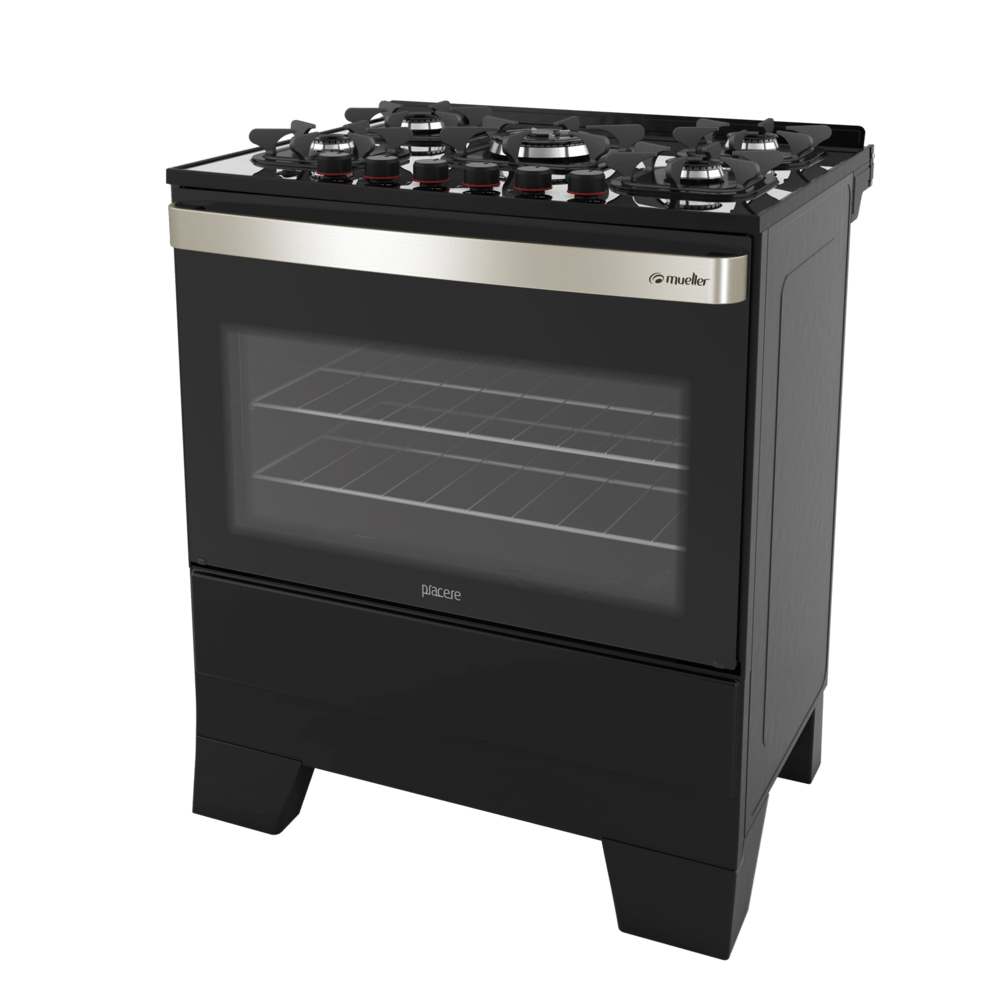
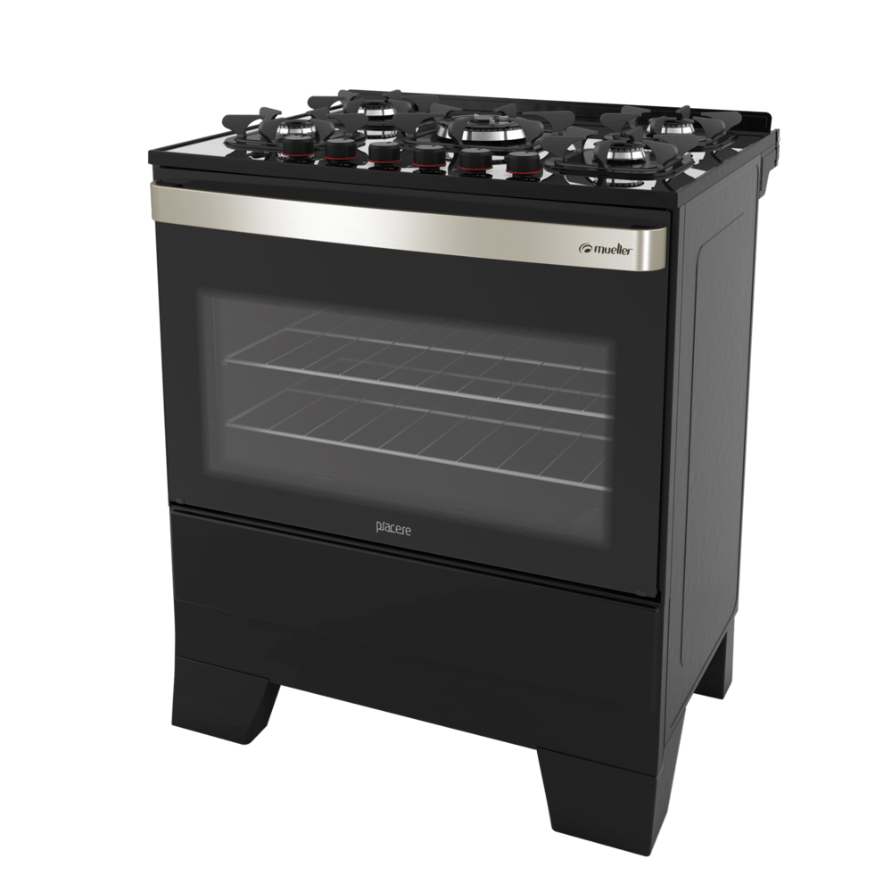

Fogão 5 Bocas Continental FC5GP Mesa de Vidro com Acendimento Automático Preto - Bivolt
À vista: R$2.099,90
em 12x de R$174,99
Informações do Produto
Quer aproveitar momentos especiais com sua família ao invés de ficar limpando seu fogão por horas? O fogão de piso 5 bocas com mesa de vidro temperado automático branco fc5vb - continental possui mesa de vidro temperado com uma superfície lisa e sem recortes que além de linda facilita a limpeza no dia-a-dia. na cor branca com grades individuais de aço brilhante e acabamento frontal black fogão fc5vb se destaca por sua modernidade e beleza. o fogão fc5vb tem queimadores potentes contando com 4 semirrápidos e 1 queimador hiper chama para garantir mais agilidade no preparo das suas refeições com acendimento automático tanto para mesa quanto para forno. possui tudo que você precisa para garantir praticidade e facilidade de limpeza: pés altos vidro interno removível e botões que também podem ser removidos. Além do forno que possui revestimento liso fácil de limpar e capacidade de 91 litros prateleiras autodeslizante + deslizante para preparar suas maiores receitas sem preocupação e bloqueia gás para sua maior segurança.